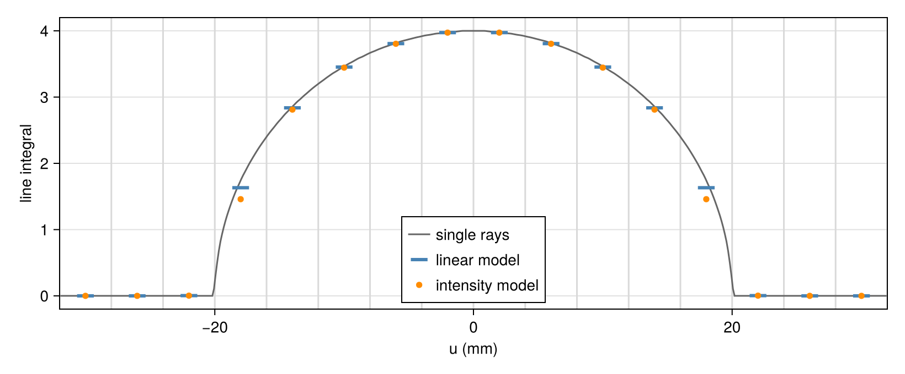

From Intensities to Line Integrals
The projectors compute line integrals of the attenuation coefficient. A scanner counts photons. This page shows how the two are related: for one ray, and for a data element that covers several rays, where the detector sums the photons of all its rays before the logarithm is taken. Use the Intensity Model shows how to reconstruct with that model.
using CTOperators, ImagePhantoms, CairoMakie
using ImageGeoms: axisOne ray
The source sends photons along a ray toward a detector cell. Without an object the cell counts $I_0$ of them (per unit of time), measured in a scan without the object. With the object in the beam it counts $I$. On a short piece $ds$ of the ray, a photon is absorbed or scattered out of the ray with the probability $\mu \, ds$, where $\mu$ is the linear attenuation coefficient at that point (per mm, if lengths are in mm). Of the $I(s)$ photons that reach the piece, $\mu(s) \, I(s) \, ds$ are removed on average:
\[\frac{dI}{ds} = -\mu(s) \, I(s).\]
The loss is proportional to the number of photons present, and the solution is the Beer-Lambert law,
\[I = I_0 \exp\left(-\int_\text{ray} \mu \, ds\right) = I_0 \exp(-p).\]
The attenuation coefficient is the image $x$, and $p$ is the line integral a projector computes. Through 2 mm of a material with $\mu = 0.5$ per mm, $p = 1$ and a fraction $\exp(-1) \approx 0.37$ of the photons arrives; through 8 mm, $p = 4$ and $0.018$.
The logarithm turns the measured fraction back into the line integral,
\[p = -\log \frac{I}{I_0},\]
which is linear in the image. This is why a projector is a linear operator, and why the data of the projectors are line integrals, not photon counts.
The model assumes:
- One attenuation image. Every voxel has one value $\mu$, the same for all photons of the beam.
- No scattered photons in the cells. A photon scattered out of a ray is lost; it is not counted in another cell.
- Mean counts. $I$ is the mean number of photons; the counts of a real scan are random around it. The reconstructions in these docs fit line integrals by least squares.
Several rays per data element
A data element does not belong to one ray. Its cell has an area, and the focal spot, where the rays start, has a size: the photons that reach one cell come along many rays, each with its own line integral $p_k$. Sampling the Beam shows how sampled places such rays and weights them with $w_k$ (normalized, $\sum_k w_k = 1$). The cell cannot tell along which ray a photon came; it counts all of them,
\[I = I_0 \sum_k w_k \exp(-p_k),\]
and the logarithm is taken only after this sum:
\[p = -\log \sum_k w_k \exp(-p_k).\]
This is the intensity model, IntensityModel. The linear model, sampled, averages the line integrals instead, $\bar p = \sum_k w_k p_k$. The two agree when all rays of the data element see the same line integral. Otherwise the intensity model is smaller: $\exp$ is convex, so by Jensen's inequality $\sum_k w_k \exp(-p_k) \ge \exp(-\bar p)$. The rays with the smaller line integrals bring more photons, and they dominate the count.
For small differences $d_k = p_k - \bar p$, expanding $\exp(-d_k) \approx 1 - d_k + d_k^2 / 2$ gives $\sum_k w_k \exp(-d_k) \approx 1 + \sigma^2 / 2$, with the weighted variance $\sigma^2 = \sum_k w_k d_k^2$, and
\[p \approx \bar p - \frac{\sigma^2}{2}.\]
The gap is half the variance of the line integrals within the data element: small where the object varies little across the rays, large at edges of dense objects. For a data element whose two halves see $0$ and $P$ (variance $P^2 / 4$):
two_halves(P) = (P=P, linear=P / 2, intensity=round(-log((1 + exp(-P)) / 2); digits=4),
approximation=P / 2 - P^2 / 8)
[two_halves(P) for P in (0.1, 1.0, 4.0)]3-element Vector{@NamedTuple{P::Float64, linear::Float64, intensity::Float64, approximation::Float64}}:
(P = 0.1, linear = 0.05, intensity = 0.0488, approximation = 0.04875)
(P = 1.0, linear = 0.5, intensity = 0.3799, approximation = 0.375)
(P = 4.0, linear = 2.0, intensity = 0.675, approximation = 0.0)At $P = 0.1$ the two models differ by 2.5 %, at $P = 1$ by 24 %, and at $P = 4$ the intensity model gives 0.68 instead of 2. There the expansion fails, since the differences are not small.
At an edge
A disk of radius 20 mm with $\mu = 0.1$ per mm (on 256 × 256 pixels of 0.25 mm), one parallel-beam view with cells of 4 mm, and 32 rays per cell. The line integral through the center of the disk is 4:
image = ImageGeom(; dims=(256, 256), deltas=(0.25, 0.25))
x = Float32.(phantom(axis(image, 1), axis(image, 2), [circle((0.0, 0.0), 20.0, 0.1)], 4))
view = parallel_beam(; angles=[0.0], nu=16, nv=1, du=4.0)
rays = DetectorSampling(RegularPoints(32, 1))
op = JosephProjector(image, view)
p_linear = (sampled(op; detector=rays) * x)[:, 1, 1]
p_intensity = IntensityModel(op; detector=rays)(x)[:, 1, 1];The figure shows the line integrals of single rays across the detector (a view with cells of 0.125 mm), and the value of every 4 mm cell in the two models. The cell boundaries are the gray lines.

The cells of the left half, with the variance of the line integrals of the 32 rays of each cell (stacked returns them side by side):
P = stacked(op; detector=rays) * x
variance(i) = sum(abs2, P[i, 1, 1, :] .- p_linear[i]) / 32
[(cell=i, linear=round(p_linear[i]; digits=4), intensity=round(p_intensity[i]; digits=4),
approximation=round(p_linear[i] - variance(i) / 2; digits=4)) for i in 3:8]6-element Vector{@NamedTuple{cell::Int64, linear::Float32, intensity::Float32, approximation::Float32}}:
(cell = 3, linear = 0.0033, intensity = 0.0032, approximation = 0.0031)
(cell = 4, linear = 1.632, intensity = 1.4591, approximation = 1.4739)
(cell = 5, linear = 2.838, intensity = 2.8114, approximation = 2.8117)
(cell = 6, linear = 3.4536, intensity = 3.4445, approximation = 3.4446)
(cell = 7, linear = 3.8075, intensity = 3.8049, approximation = 3.8049)
(cell = 8, linear = 3.9733, intensity = 3.973, approximation = 3.973)Inside the disk the line integrals change little across a cell, and the models differ in the third or fourth digit. The edge of the disk crosses cell 4: some of its rays miss the disk, others pass through it, and the intensity model is 0.17 lower than the linear one. A reconstruction from such data with the linear model puts the difference into the image.
De Man et al. (1999) simulate a finite focal spot and detector cells this way: they sample both finely and take the logarithm of the summed photon flux, "the correct simulation procedure". The mean of the line integrals over the same samples removes the exponential edge-gradient effect (EEGE), which they identify as an important cause of metal streak artifacts.
The intensity model as an operator
The intensity model is nonlinear in the image. IntensityModel(op; source, detector) takes the same samples as sampled and evaluates $p(x)$ per data element, with a stable log-sum-exp. Its derivative, CTOperators.jacobian, is a weighted sum of the projectors of the samples,
\[J = \sum_k \mathrm{diag}(\pi_k) \, A_k, \qquad \pi_{ik} = \frac{w_{ik} \exp(-p_{ik})}{\sum_l w_{il} \exp(-p_{il})},\]
with weights per data element that sum to 1: the share of the photons of the data element that came along ray $k$. At $x = 0$ all line integrals are 0, $\pi_{ik} = w_{ik}$, and $J$ is the linear model.
A reconstruction fits $p(x)$ to the data $y$ by minimizing $\|p(x) - y\|^2 / 2$. Its gradient is $J^T (p(x) - y)$ (CTOperators.gradient!, or IntensityGradient as an operator). The objective is in general not convex: the result can depend on where the iteration starts. Use the Intensity Model starts from the reconstruction with the linear model.
References
- B. De Man, J. Nuyts, P. Dupont, G. Marchal, P. Suetens, "Metal streak artifacts in X-ray computed tomography: a simulation study", IEEE Transactions on Nuclear Science 46(3), 691–696, 1999.
This page was generated using Literate.jl.